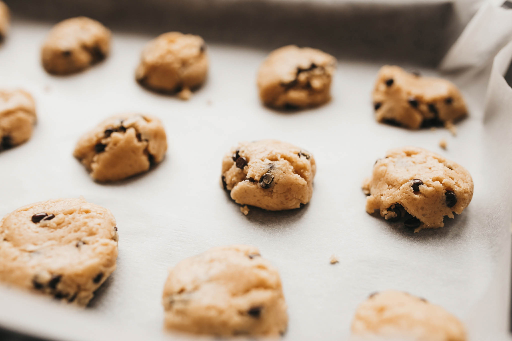

College Baking Made Easy
Chocolate Chip Cookies
Source: Marco Verch
Image by Marco Verch (Creative Commons 2.0)
Ingredients: 3 cups of all-purpose flour, 2 eggs, 3/4 cup of brown sugar, 1 cup butter, 1 cup of chcocalte chips or broken chocolate bar chunks
Step 1: Preheat oven to 350 degrees F (175 degrees C).
Step 2: Sift flour and brown sugar into a bowl; stir in eggs. Mix butter into flour mixture until dough is creamy; fold in chocolate chips. Spoon dough onto a baking sheet, keeping them about 3 inches apart.
Step 3: Bake in the preheated oven until slightly brown, 10 to 15 minutes. Cool.
Source: allrecipes.com